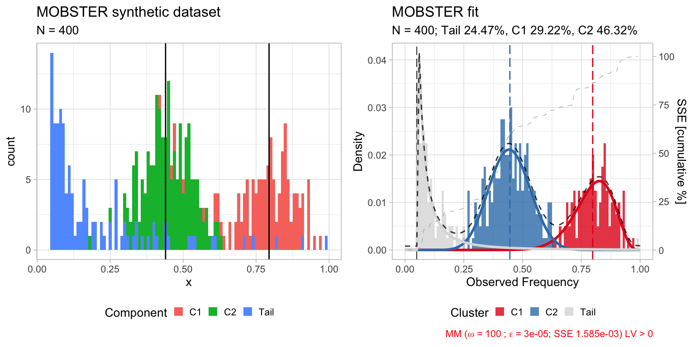
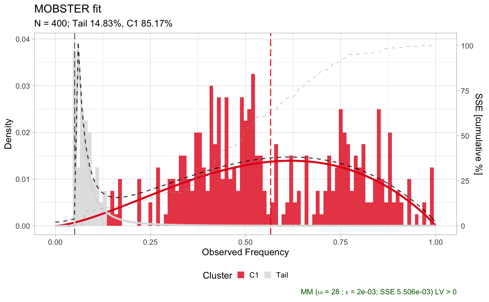
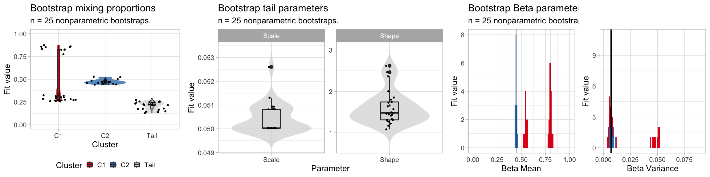
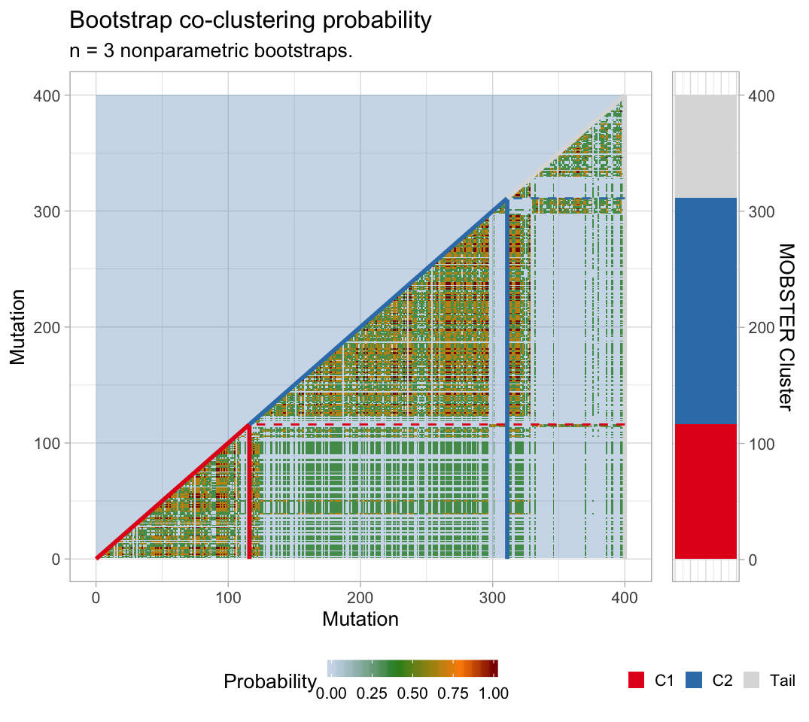
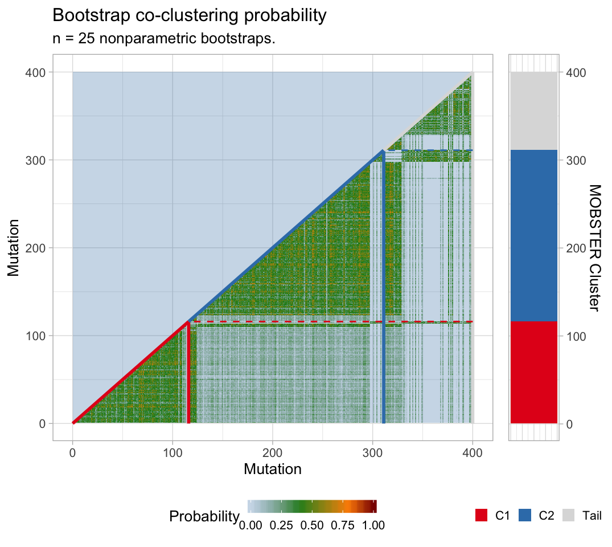

bootstrap.RmdThis vignette describes how to compute the bootstrap confidence of a MOBSTER model.
Both parametric and nonparametric bootstrap options are available: the former samples data from the model, the latter re-samples the data (with repetitions). Statistics are bootstrap estimates (averages) of the bootstrap fits. In both cases a model bootstrap probability can be computed, as well as the probability of clustering together any two mutations.
We show this with a small synthetic dataset .to speed up the computation.
# Data generation
dataset = random_dataset(
N = 400,
seed = 123,
Beta_variance_scaling = 100
)
# Fit model -- FAST option to speed up the vignette
fit = mobster_fit(dataset$data, auto_setup = 'FAST')
#> [ MOBSTER fit ]
# Composition with cowplot
cowplot::plot_grid(
dataset$plot,
plot(fit$best),
ncol = 2,
align = 'h') %>%
print
Now we can compute n.resamples nonparametric bootstraps using function mobster_bootstrap, passing parameters to the calls of mobster_fit. This function by defaults runs the fits in parallel (using a default percentage of the available cores); parallel computing capabilities are achieved using package easypar.
# The returned object contains also the list of bootstrap resamples, and the fits.
bootstrap_results = mobster_bootstrap(
fit$best,
bootstrap = 'nonparametric',
n.resamples = 25,
auto_setup = 'FAST' # forwarded to mobster_fit
)
#> [ MOBSTER bootstrap ~ 25 resamples from nonparametric bootstrap ]The output object includes the bootstrap resamples, the fits and possible error returned by the runs.
# Resamples are available for inspection as list of lists,
# with a mapping to record the mutation id of the resample data.
# Ids are row numbers.
print(bootstrap_results$resamples[[1]][[1]] %>% as_tibble())
#> # A tibble: 400 x 3
#> id VAF original.id
#> <int> <dbl> <int>
#> 1 1 0.877 10
#> 2 2 0.965 58
#> 3 3 0.791 77
#> 4 4 0.715 98
#> 5 5 0.270 338
#> 6 6 0.405 174
#> 7 7 0.482 129
#> 8 8 0.0691 361
#> 9 9 0.270 338
#> 10 10 0.829 93
#> # … with 390 more rows
# Fits are available inside the $fits list
print(bootstrap_results$fits[[1]])
#> ── [ MOBSTER ] My MOBSTER model n = 400 with k = 2 Beta(s) and a tail ───────────────────────────────────────────────────
#> ● Clusters: π = 46% [C2], 32% [C1] and 22% [Tail], with π > 0.
#> ● Tail [n = 77, 22%] with alpha = 1.1.
#> ● Beta C1 [n = 129, 32%] with mean = 0.79.
#> ● Beta C2 [n = 194, 46%] with mean = 0.44.
#> ℹ Score(s): NLL = -76.38; ICL = -28.36 (-77.8), H = 70.48 (21.03). Fit converged by MM in 92 steps.
plot(bootstrap_results$fits[[1]])
Errors of each run are available, if any.
Bootstrap statistics can be computed with bootstrapped_statistics.
With nonparametric bootstrap the data co-clustering probability is also computed (the probability of any pair of mutations in the data to be clustered together). Note that this probability depends on the joint resample probability of each pair of mutations (each bootstrapped with probability \(1/n\), for \(n\) mutations).
bootstrap_statistics shows to screen several statistics.
bootstrap_statistics = bootstrapped_statistics(
fit$best,
bootstrap_results = bootstrap_results
)
#> ℹ Computing model frequency
#> # A tibble: 2 x 3
#> Model Frequency fit.model
#> <fct> <dbl> <lgl>
#> 1 K = 2 with tail 0.6 TRUE
#> 2 K = 1 with tail 0.4 FALSE
#>
✓ Computing model frequency ... done
#>
ℹ Confidence Intervals (CI) for empirical quantiles
#>
#> Mixing proportions
#> # A tibble: 3 x 8
#> cluster statistics min lower_quantile higher_quantile max fit.value
#> <chr> <chr> <dbl> <dbl> <dbl> <dbl> <dbl>
#> 1 C1 Mixing pr… 0.256 0.258 0.866 0.873 0.292
#> 2 C2 Mixing pr… 0.440 0.441 0.526 0.527 0.463
#> 3 Tail Mixing pr… 0.127 0.134 0.263 0.273 0.245
#> # … with 1 more variable: init.value <dbl>
#>
#> Tail shape/ scale
#> # A tibble: 2 x 8
#> cluster statistics min lower_quantile higher_quantile max fit.value
#> <chr> <chr> <dbl> <dbl> <dbl> <dbl> <dbl>
#> 1 Tail Scale 0.0500 0.0500 0.0518 0.0526 0.0500
#> 2 Tail Shape 1.08 1.14 2.53 2.62 1.25
#> # … with 1 more variable: init.value <dbl>
#>
#> Beta peaks
#> # A tibble: 4 x 8
#> cluster statistics min lower_quantile higher_quantile max fit.value
#> <chr> <chr> <dbl> <dbl> <dbl> <dbl> <dbl>
#> 1 C1 Mean 0.526 0.532 0.818 0.824 0.798
#> 2 C1 Variance 0.00356 0.00416 0.0514 0.0517 0.00664
#> 3 C2 Mean 0.431 0.432 0.464 0.467 0.446
#> 4 C2 Variance 0.00540 0.00556 0.0104 0.0109 0.00731
#> # … with 1 more variable: init.value <dbl>
#>
✓ Confidence Intervals (CI) for empirical quantiles ... done
#>
ℹ Co-clustering probability from nonparametric bootstrap
✓ Co-clustering probability from nonparametric bootstrap ... doneObject bootstrap_statistics contains tibbles that can be plot with specific mobster functions.
# All bootstrapped values
print(bootstrap_statistics$bootstrap_values)
#> # A tibble: 325 x 5
#> cluster statistics fit.value init.value resample
#> <chr> <chr> <dbl> <dbl> <int>
#> 1 Tail Shape 1.08 1.14 1
#> 2 Tail Scale 0.0508 0.0508 1
#> 3 Tail Mean 0.670 0.414 1
#> 4 Tail Variance Inf Inf 1
#> 5 C2 a 14.0 20.4 1
#> 6 C2 b 17.6 20.4 1
#> 7 C2 Mean 0.443 0.645 1
#> 8 C2 Variance 0.00757 0.00702 1
#> 9 C1 a 18.6 16.5 1
#> 10 C1 b 4.84 16.5 1
#> # … with 315 more rows
# The model probability
print(bootstrap_statistics$bootstrap_model)
#> # A tibble: 2 x 3
#> Model Frequency fit.model
#> <fct> <dbl> <lgl>
#> 1 K = 2 with tail 0.6 TRUE
#> 2 K = 1 with tail 0.4 FALSE
# The parameter stastics
print(bootstrap_statistics$bootstrap_statistics)
#> # A tibble: 15 x 8
#> cluster statistics min lower_quantile higher_quantile max fit.value
#> <chr> <chr> <dbl> <dbl> <dbl> <dbl> <dbl>
#> 1 C1 a 2.08e+0 2.11 29.4 35.4 18.6
#> 2 C1 b 1.69e+0 1.70 6.89 9.04 4.69
#> 3 C1 Mean 5.26e-1 0.532 0.818 0.824 0.798
#> 4 C1 Mixing pr… 2.56e-1 0.258 0.866 0.873 0.292
#> 5 C1 Variance 3.56e-3 0.00416 0.0514 0.0517 0.00664
#> 6 C2 a 9.32e+0 10.2 19.2 19.8 14.6
#> 7 C2 b 1.23e+1 12.7 24.2 24.9 18.2
#> 8 C2 Mean 4.31e-1 0.432 0.464 0.467 0.446
#> 9 C2 Mixing pr… 4.40e-1 0.441 0.526 0.527 0.463
#> 10 C2 Variance 5.40e-3 0.00556 0.0104 0.0109 0.00731
#> 11 Tail Mean 8.09e-2 0.0829 0.477 0.670 0.247
#> 12 Tail Mixing pr… 1.27e-1 0.134 0.263 0.273 0.245
#> 13 Tail Scale 5.00e-2 0.0500 0.0518 0.0526 0.0500
#> 14 Tail Shape 1.08e+0 1.14 2.53 2.62 1.25
#> 15 Tail Variance 4.04e-3 0.00533 Inf Inf Inf
#> # … with 1 more variable: init.value <dbl>Bootstrapping, one can plot the model frequency across re-samples. A model is identified by its mixture components (e.g., 2 Betas plus one tail).

The bootstrap estimates of the parameters can be visualised.
# Plot the mixing proportions
mplot = plot_bootstrap_mixing_proportions(
fit$best,
bootstrap_results = bootstrap_results,
bootstrap_statistics = bootstrap_statistics
)
# Plot the tail parameters
tplot = plot_bootstrap_tail(
fit$best,
bootstrap_results = bootstrap_results,
bootstrap_statistics = bootstrap_statistics
)
# Plot the Beta parameters
bplot = plot_bootstrap_Beta(
fit$best,
bootstrap_results = bootstrap_results,
bootstrap_statistics = bootstrap_statistics
)
#> Warning: Removed 4 rows containing missing values (geom_bar).
#> Warning: Removed 4 rows containing missing values (geom_bar).
# Figure
figure = ggarrange(
mplot,
tplot,
bplot,
ncol = 3, nrow = 1,
widths = c(.7, 1, 1)
)
print(figure)
For a nonparametric bootstrap we can plot also the co-clustering probability of the data.
plot_bootstrap_coclustering(
fit$best,
bootstrap_results = bootstrap_results,
bootstrap_statistics = bootstrap_statistics
)